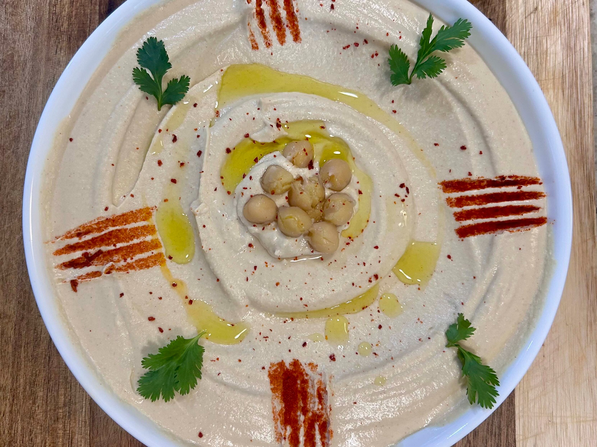

Side
Light Chickpea Hummus
Extra-smooth Lebanese-style hummus with a light texture and no olive oil in the blend.

Ingredients
- 1 can garbanzo beans (about 390 g), drained; reserve the liquid
- 20 g tahini
- 15 g fresh lemon juice
- 1 small garlic clove
- 1/2 tsp ground cumin
- Salt, to taste
- 30–45 g reserved aquafaba
- 1–2 tbsp ice-cold water, as needed
Method
- Warm the drained chickpeas briefly if convenient.
- For an especially smooth Lebanese-style texture, blend the chickpeas first with 30–45 g aquafaba for 2–3 minutes, scraping down as needed, until completely smooth. Do not add the tahini or lemon yet.
- Add the tahini, lemon juice, garlic, cumin, and salt and blend for another 1–2 minutes.
- Add ice-cold water a little at a time and continue blending until pale, fluffy, and slightly looser than the final texture you want.
- Chill before serving. It will firm up as it rests.
Serving
No olive oil is needed in the hummus itself. Add only a tiny drizzle on top when serving, if you want.
Notes
The key step is blending the chickpeas first on their own with aquafaba. That extra blending time gives the hummus a noticeably smoother, lighter texture before the tahini and lemon are added.